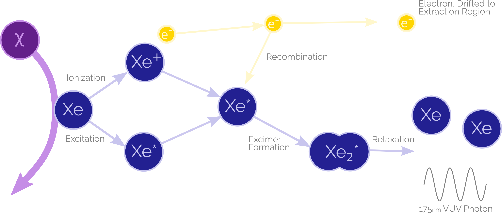
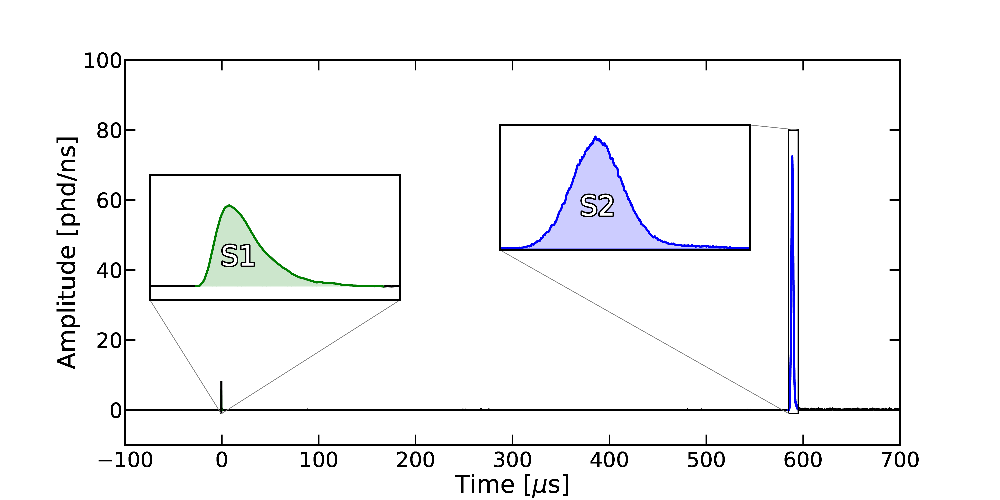
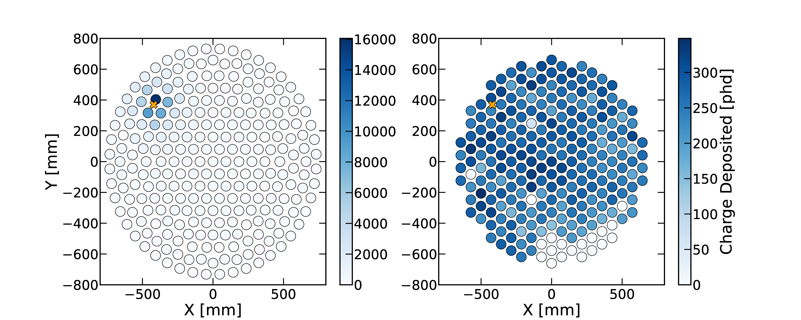
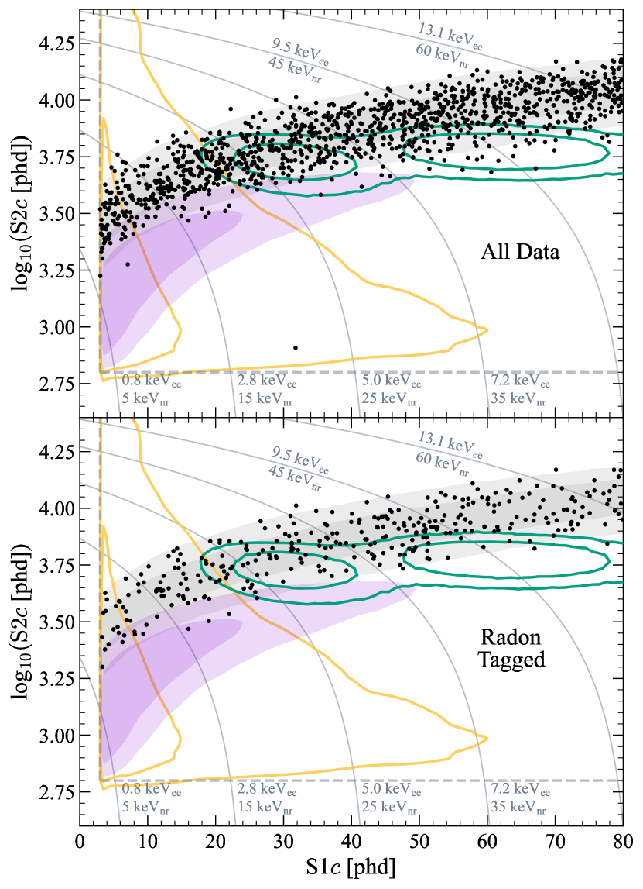
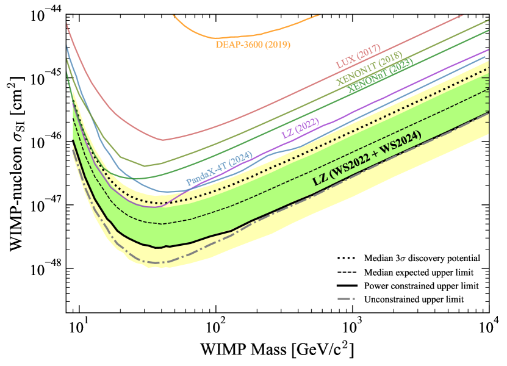

<!DOCTYPE html>
<html lang="en-us"
  dir="ltr">

<head><script src="/livereload.js?mindelay=10&amp;v=2&amp;port=1313&amp;path=livereload" data-no-instant defer></script>
  <meta charset="utf-8">
<meta name="viewport" content="width=device-width, initial-scale=1">
<meta name="description" content="LUX-ZEPLIN - {{ .Site.Title }}">

<meta name="ICBM" content="19.0760, 72.8777">
<meta name="geo.position" content="19.0760;72.8777">
<meta name="geo.region" content="IN-MH">
<meta name="geo.placename" content="Mumbai">
<title>LZ | Dan Hunts For WIMPs</title>


      <link rel="stylesheet" href="/css/custom.css" type="text/css">
      <link rel="stylesheet" href="/css/tailwind.css" type="text/css">

</head>

</html>

<body class="bg-gradient-to-r from-slate-900 to-slate-800 font-mono text-white"> <div class="container mx-auto flex flex-col px-4 xl:w-8/12 sm:max-w-full"> 
  

  <header class="flex flex-row py-4" >

  


  <nav
    class="flex flex-row items-center w-full justify-between">


  
  
    <div class="flex flex-col gap-1">
      <a href="//localhost:1313/" class="text-4xl font-bold hover:text-sky-400 whitespace-nowrap">Dan Hunt</a>
      <p>Studying the direct detection of dark matter</p>
    </div>
  

  <div class="dropdown-menu flex flex-row absolute max-lg:w-full max-lg:items-center max-lg:justify-center max-lg:-top-full lg:static max-lg:bg-slate-900 max-lg:h-[calc(100dvh)] max-lg:left-0">
    <ul class="flex flex-col lg:flex-row gap-2">
      
  <li class="font-bold border border-sky-400 px-3 py-2 hover:bg-sky-400 focus:text-sky-400 text-center">
    <a href="/about">About Me</a>
  </li>

  <li class="font-bold border border-sky-400 px-3 py-2 hover:bg-sky-400 focus:text-sky-400 text-center">
    <a href="/darkmatter">Dark Matter</a>
  </li>

  <li class="font-bold border border-sky-400 px-3 py-2 hover:bg-sky-400 focus:text-sky-400 text-center">
    <a href="/detection">Detection</a>
  </li>

  <li class="font-bold border border-sky-400 px-3 py-2 hover:bg-sky-400 focus:text-sky-400 text-center">
    <a href="/cv.pdf">CV</a>
  </li>

  <li class="font-bold border border-sky-400 px-3 py-2 hover:bg-sky-400 focus:text-sky-400 text-center">
    <a href="/lz">LZ</a>
  </li>

  <li class="font-bold border border-sky-400 px-3 py-2 hover:bg-sky-400 focus:text-sky-400 text-center">
    <a href="/othersearches">Other Searches</a>
  </li>

    </ul>
  </div>
  <div class="open-dropdown-button lg:hidden">
    <svg xmlns="http://www.w3.org/2000/svg" viewBox="0 0 448 512" width="32" height="32" fill="white">
      <path
        d="M0 96C0 78.3 14.3 64 32 64H416c17.7 0 32 14.3 32 32s-14.3 32-32 32H32C14.3 128 0 113.7 0 96zM0 256c0-17.7 14.3-32 32-32H416c17.7 0 32 14.3 32 32s-14.3 32-32 32H32c-17.7 0-32-14.3-32-32zM448 416c0 17.7-14.3 32-32 32H32c-17.7 0-32-14.3-32-32s14.3-32 32-32H416c17.7 0 32 14.3 32 32z" />
    </svg>
  </div>
  <div class="close-dropdown-button hidden z-50">
    <svg xmlns="http://www.w3.org/2000/svg"
      viewBox="0 0 384 512" width="32" height="32" fill="white">
      <path
        d="M342.6 150.6c12.5-12.5 12.5-32.8 0-45.3s-32.8-12.5-45.3 0L192 210.7 86.6 105.4c-12.5-12.5-32.8-12.5-45.3 0s-12.5 32.8 0 45.3L146.7 256 41.4 361.4c-12.5 12.5-12.5 32.8 0 45.3s32.8 12.5 45.3 0L192 301.3 297.4 406.6c12.5 12.5 32.8 12.5 45.3 0s12.5-32.8 0-45.3L237.3 256 342.6 150.6z" />
    </svg>
  </div>
</nav>


</header>

  <div class="flex flex-col pt-8 gap-10 w-full">
    
    <div class="flex flex-col w-full gap-4">
      <h2 class="text-3xl font-bold">LZ</h2>
      <div class="flex flex-col gap-4 w-full">
        <hr />
        <div class="prose prose-invert max-w-full">
  <h1 id="what-is-lz">What is LZ?</h1>
<p>LZ, or LUX-ZEPLIN, is a second generation dual phase LXe Time Projection Chamberfor the detection of dark matter. It&rsquo;s located in the Sanford Underground Research Facility (SURF).</p>
<h1 id="that-answered-none-of-my-questions-those-were-just-buzzwords">That answered none of my questions! Those were just buzzwords!</h1>
<p>This might help. Here&rsquo;s a diagram of LZ, with a person for scale. It&rsquo;s a matryoshka of a liquid xenon tank, inside of a skin xenon layer, inside of a GDLS tank, inside of a water tank, inside of the Davis Cavern.</p>
<p></p>
<h1 id="if-anything-that-helped-even-less">If anything, that helped even less</h1>
<p>Most of those layers are just there to reject things that aren&rsquo;t dark matter, so let&rsquo;s ignore those and focus on the main TPC. We fill it up with LXe, and apply several voltages, seen below.</p>
<p></p>
<h1 id="why">Why?</h1>
<p>Because if dark matter interacts with regular matter, it releases either light, heat, or electrons! The light we can pick up easily, but we have to draw the electrons towards our PMTs and make them emit light using a strong electric field.</p>
<p></p>
<h1 id="what-do-you-see">What do you see?</h1>
<p>The light is immediately seen by PMTs - we call this an S1 signal. After the electrons are drawn to the TPC extraction region, they emit a lot of light too - we call this an S2. With these two signals, we can tell you a lot about an interaction!</p>
<p></p>
<h1 id="how">How?</h1>
<p>Well, the electrons are drawn straight up, right? So the PMT on the top of the TPC with most charge collected tells you the position of the event. And the separation between the S1 and S2, the drift time, tells you about the z position - it&rsquo;s like how you see a firework before you hear it, and can tell how far away it is using that. Then, you can use the size of the S1 and S2 to calculate the energy of the event.</p>
<p></p>
<p>You can also work out the origin of an event, or at least guess at it. Here&rsquo;s a plot of data from LZ&rsquo;s latest science results, surviving cuts, in S1-S2 space. Interactions that bounce off of the nucleus of a Xe atom produce less charge and more light than anything bouncing off of the electrons: the electrons are further away, and so an emitted electron is less likely to be recombined with the atom. We know that dark matter wouldn&rsquo;t interact with electrons, were it a WIMP. So the grey band of electron recoils can be rejected from analysis, leaving just events in the purple nuclear recoil band. A few other contours, from the decay of 124Xe (green) and of random coincidence backgrounds (yellow), are included.</p>
<p></p>
<h1 id="so-weve-found-dark-matter">So we&rsquo;ve found dark matter?</h1>
<p>Nope! We run a profile likelihood ratio test over our data, to assess the probability of events coming from a given mass of WIMP. This told us that the events in the purple contour are likely coincidence backgrounds and &rsquo;leakage&rsquo; from the ER band. For a 40GeV/c2 WIMP, we observe a fit of 0 signal events +0.6.</p>
<p>But this does let us constrain dark matter - after all, if it interacted enough, we <em>would</em> have seen it. So we can repeat mockups of this analysis with simulated signals, and work out what types of dark matter we can rule out. And we can plot them here! In the 1GeV - 1TeV regime, LZ sets world-leading limits.</p>
<p></p>
<p></p>

</div>
      </div>
    </div>
    <div class="footer flex items-center justify-center">
  <div class="py-4">
  <footer>
    <p class="whitespace-nowrap">© 2024. All rights reserved.</p>
  </footer>
</div>
</div>
  </div>
 </div> 
      <script type="text/javascript" src="/js/navbar.js"></script>
 <script id="dsq-count-scr" src="//nayanseth.disqus.com/count.js" async></script>  </body>
